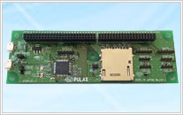
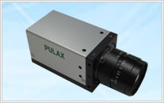

PICボード
カメラ


【USB端末として】
センサーなどと シリアル通信やAD/DA接続して 得たデータを リアルタイムにUSBを介してPCなどに提供する様な ボード開発を行えます。
USBの開発にはベンダーIDとプロダクトIDをUSB-IFから取得する必要がありますが、本ボード使用時にはPULAX取得のものを使用しますので新たなID取得経費を必要としません。(*1)
また、標準的なCDCなどのクラスはMicrosoft® Windows®7以降のOSなどではデバイスドライバーを用意する必要もありません。(*2)簡単なサンプルプログラムも提供予定ですので比較的簡単に導入が可能です。
【USBメモリーへのデータ収集機として】
USBメモリーからのデータ発信にも
USBは搭載ジャンパーの切り換えで、USBデバイスにもUSBホスト機にもできます。
もちろんUSBケーブルによる切り換え（OTG）にも対応します。
Microchip社からFATのサービスルーチンも無償提供されていますので、他の機器とUSBメモリーを用いたデータ交換を行うボードの開発が追加IPの購入無しで可能です。(*3)
USBメモリーへの電源供給機能も備わっています。(*4)
【SDカードへのデータ収集機として】
SDカードからのデータ発信にも
標準SDカードスロットを装備しています。(*5) カードの装着有無の判断も可能です。(*6)
Microchip社からFATのサービスルーチンも無償提供されていますので、他の機器とSDカードを用いたデータ交換を行うボードの開発が追加IPの購入無しで可能です。(*3)
【CPU端子をヘッダーに集約】
ほぼ全てのCPUポート (*7) が自由に使用可能となる様に全90ピンのヘッダーに集約しました。
【通信ポート専用端子を装備】
ポート用ヘッダーとは別に、UART、I²C、SPIの通信用端子を各2チャネル用意。(*8)
各通信チャネルのデバッグ・確認がより容易になりました。
仕様
| 搭載マイコン | Microchip Technology Inc.製 PIC24FJ256GB108 |
|---|---|
| 性能 | 最大16MIPS @32MHz、内蔵プログラムメモリ 256Kバイト、内蔵SRAM 16Kバイト |
| コネクタ | 標準SDカードスロット ×1、マイクロUSBソケットAB ×2（USB接続用、電源入力用） |
| ソケット | 90ピンヘッダー、UART（2ch）、I²C（2ch）、SPI（2ch、Ch2はスレーブ専用） |
| 入力電源 | DC 5V、ボード単体消費電流 約36mA、ボード内電圧 DC 3.3V |
| 基板寸法 | 150×50 mm |
※ 開発ツールにはMPLAB® X IDE と PICkit™3 などが利用できます。
※ ショートピンは3個添付。電源、ケーブル、SDカード等は別途ご用意ください。
※ 説明書、サンプルプログラムは別途、ご用意しております。
(*1) 本ボードにアプリケーションを搭載して再販する場合には別途USB-IFとの契約が必要です。
当社のIDを開発以外の目的で使用することはできません。
当社はUSBのIDをUSB-IFとの契約上、切り売り・再販することができません。
(*2) OSやクラスによっては別途ドライバーが必要となることがあります。 その場合にはお客様でご用意ください。
(*3) 対応するFATについてはMicrochip社からの提供資料を参照してください。
ここでいう追加のIPとはFATシステムを意味します。
(*4) 電源コネクタに電源を接続し、搭載ジャンパーを設定してください。
(*5) SDとの通信はSPIとなります。 ライトプロテクト機能はありません。
(*6) 搭載ジャンバーによりポートへ接続できます。
(*7) オシレーターとサブオシレーターの端子を除く。 これらの4端子はポートとして利用できません。
(*8) 通信ポートのピン設定を当社指定にした場合に利用可能。 この場合SPI2はスレーブ専用となります。
【特徴】
・SONY 製 CMOS センサー IMX174 採用（1/1.2“、230万画素）
・グローバルシャッター対応
・シャッター速度、ゲイン、ホワイトバランスは Auto/Manual 設定可能
・外部トリガーモード対応
・シャッタータイミング等出力端子 装備
【主な仕様】
| 有効画素数 | 212万画素（Full HD） |
|---|---|
| 最大フレームレート | 60 fps（RGB 出力） |
| 対応レンズ | C マウント |
| インターフェース | DVI（画像出力）、USB（設定用） |
| 大きさ | 幅 36mm × 高さ 36mm × 奥行 65mm |
| 消費電力 | 約 3.0W |